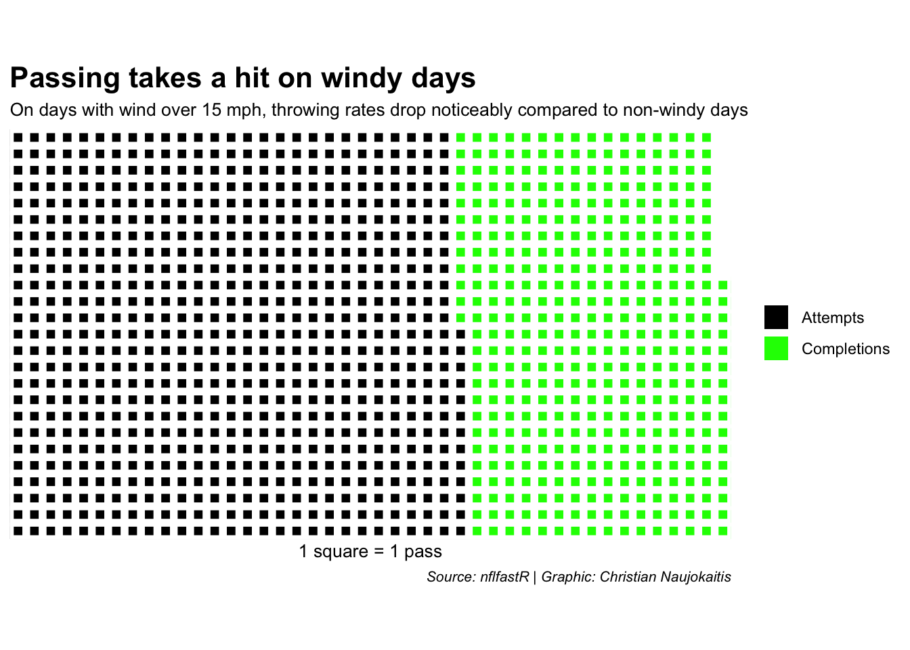

Do quarterbacks have an advantage when throwing indoors compared to open stadiums?
quarterbacks
completion
nfl
Author
Christian Naujokaitis
Published
April 1, 2025
There are 10 indoor or domed stadiums in the NFL. One huge factor for playing indoor is that the wind or weather doesn’t affect the quarterbacks. With no outside elements to deal with, QBs can throw to deeper routes more consistently and maintain better overall accuracy.
So that got me thinking, does playing indoor increase quarterbacks pass completion? And when you do play outside, does wind really play a factor when playing outdoors since you switch directions?
First let’s look at some data to see completion rate for indoor, dome and outdoor stadiums. Without wind or any other outdoor factors like the cold, I would only assume that throwing indoor would be significantly better than throwing outdoor.
Based on my initial question, I was wrong, there really isn’t a difference.
The great thing about NFLFastR is that it breaks down each play and even gives data about the weather. One stat that I pulled from was the wind per play. It’s super helpful because you can see exactly how much wind was present on every snap, which makes it easier to connect how weather might’ve impacted a QB’s performance. Instead of just guessing if wind played a role, you’ve got the numbers to back it up. It’s a solid way to add some context when looking at passing efficiency or accuracy on a game-by-game basis.
But how much does wind actually play a factor when throwing the ball? According to the New York Times, passes thrown in wind speeds of 15 miles per hour or more are likely to be affected. That means anything above that threshold can mess with a quarterback’s accuracy, timing, and distance.
So in the data below, I found out the completions vs the amount of passes when the wind is less than 15 mph and more than 15 mph. The goal originally was to see how completion rate was during windy days, but I noticed a bigger stat from the waffle chart.
Code
library(waffle)library(ggplot2)wi <-c("Attempts"=688, "Completions"=403)nw <-c("Attempts"=11962/100, "Completions"=7269/100)waffle( wi, rows =25, title ="Passing takes a hit on windy days", xlab ="1 square = 1 pass", colors =c("black", "green")) +labs(subtitle ="On days with wind over 15 mph, throwing rates drop noticeably compared to non-windy days",caption ="Source: nflfastR | Graphic: Christian Naujokaitis" ) +theme(plot.title =element_text(size =16, face ="bold"),plot.subtitle =element_text(size =10),plot.caption =element_text(size =8, face ="italic") )

Code
waffle( nw, rows =10, title ="Clear skies = more throws", xlab ="1 square = 100 passes", colors =c("black", "green")) +labs(subtitle ="When wind is calm, quarterbacks throw passes at a much higher rate.",caption ="Source: nflfastR | Graphic: Christian Naujokaitis" ) +theme(plot.title =element_text(size =16, face ="bold"),plot.subtitle =element_text(size =10),plot.caption =element_text(size =8, face ="italic") )
One thing to pay attention to is how many passes are thrown on non-windy days versus windy ones. There are way more passes on calm days—each square represents 100 passes, and you can really see the difference. So yeah, it’s pretty clear that non-windy conditions are way more common.
Now, while wind doesn’t seem to mess with completion rates much, it does have a big impact on how far the ball gets thrown. At first, I thought wind would only be a problem if you were throwing against it, but I was way off. Turns out, when the wind picks up, it doesn’t matter if it’s at your back or in your face,the deep ball pretty much disappears.
In the chart below, I marked some of the deeper passes (anything over 80 yards). Once wind speeds hit around 10 mph or more, those deep throws start to drop off fast.
Code
library(nflfastR)library(ggplot2)pbp_2024 <-load_pbp(2024)pbp_2024_clean <- pbp_2024[complete.cases(pbp_2024$wind, pbp_2024$passing_yards), ]# Identify the row where passing yards exceed 80pbp_2024_clean$color <-ifelse(pbp_2024_clean$passing_yards >80, "red", "black")ggplot(pbp_2024_clean, aes(x = wind, y = passing_yards)) +geom_point(aes(color = color), alpha =0.6, show.legend =FALSE) +# Remove the color keyscale_color_manual(values =c("black", "red")) +# Map the colorlabs(title ="Wind has a major impact on deep passing yards", subtitle ="Strong winds affect deep passes, but short throws remain mostly unaffected.",x ="Wind Speed (mph)",y ="Passing Yards",caption ="Source: nflfastR | Graphic: Christian Naujokaitis" ) +theme_minimal() +theme(plot.title =element_text(size =16, face ="bold"),plot.subtitle =element_text(size =10),plot.caption =element_text(size =8, face ="italic") )
At the end of the day, playing indoors doesn’t really boost a quarterback’s completion rate, but it does make a difference in how many yards they rack up. When there’s wind or bad weather, QBs can still complete passes by keeping it short—but throwing deep gets a lot trickier.